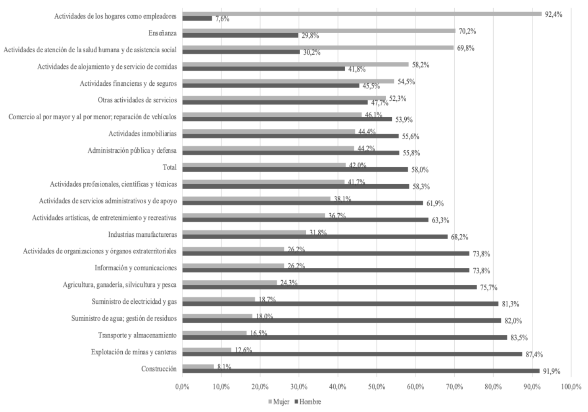
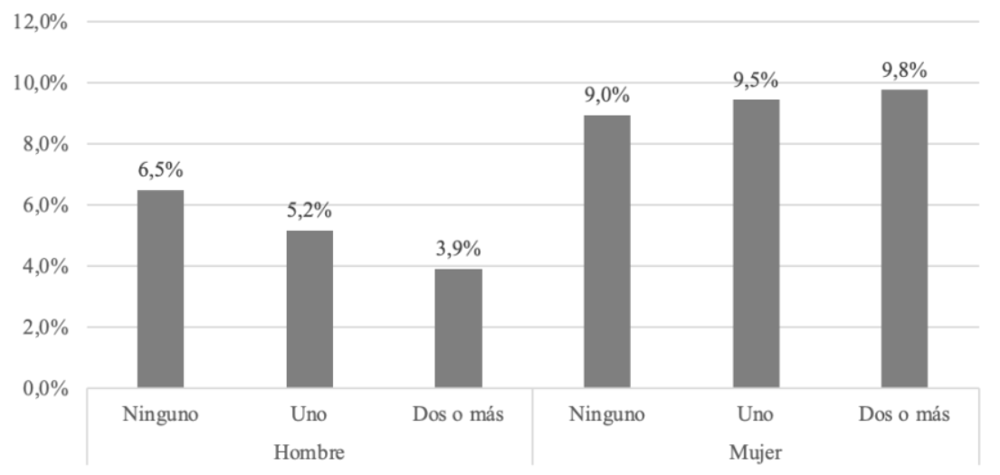
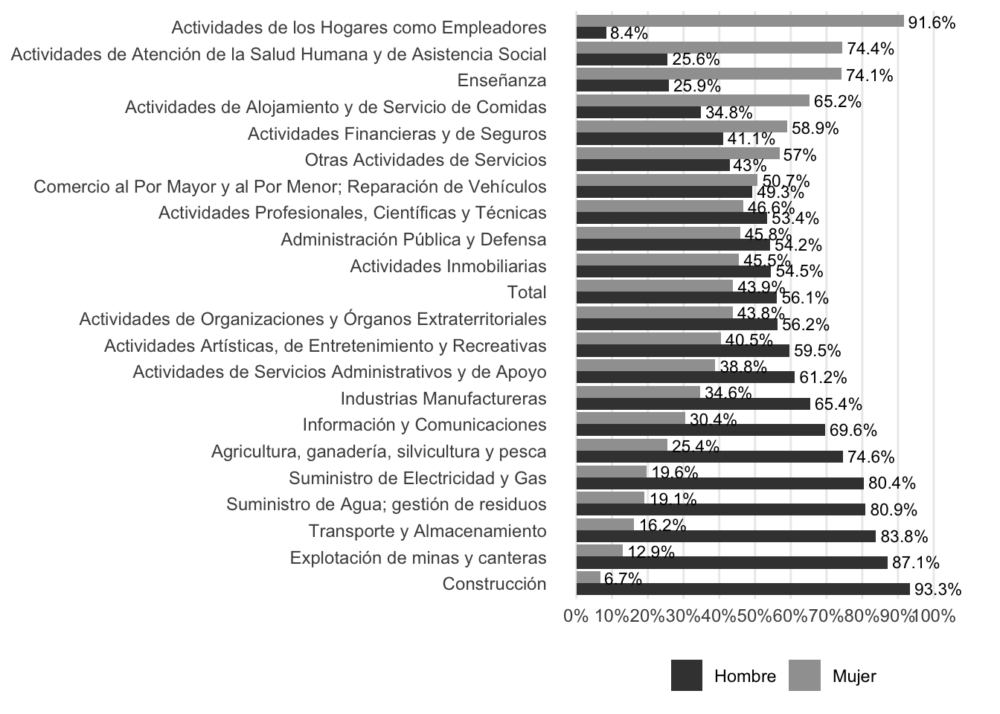

Artículo: Desafiando la segregación de género en el mercado laboral: Factores que inciden en las inserciones laborales atípicas en términos de género en Chile
Autores/as
Afiliación
Renato De Luca Escobar
Departamento de Sociología, Universidad de Chile
Benjamín Belmar Álvarez
Departamento de Sociología, Universidad de Chile
Bastián Martin Gerdes
Departamento de Sociología, Universidad de Chile
Maite Jullian Corral
Departamento de Sociología, Universidad de Chile
Fecha de publicación
1 de mayo de 2026
1 Selección de artículo/reporte
Para la realización del primer reporte de reproducibilidad en el márgen del curso electivo de Ciencia Social Abierta, se selecciona el trabajo de Palma et al. (2025), titulado “Desafiando la segregación de género en el mercado laboral: Factores que inciden en las inserciones laborales atípicas en términos de género en Chile”. - Breve resumen del artículo seleccionado
El trabajo de Palma et al. (2025) tiene por objetivo analizar los factores asociados a las inserciones laborales atípicas de género. Porque si bien en Chile la participación laboral femenina ha ido en aumento, aún persiste una fuerte segregación laboral, donde las mujeres tienden a ocuparse en labores de cuidado, salud y educación, mientras que los hombres tienen mayor presencia en sectores productivos como la minería y la construcción.
Así, se indaga en la mayor probabilidad que tienen las mujeres de insertarse en empleos atípicos respecto a los varones, fenómeno que se explicaría por los incentivos económicos y el reconocimiento social que ofrecen esos sectores masculinizados a las mujeres que deciden incursionar en ellos. En contraste, los hombres que se insertan en sectores feminizados enfrentan salarios más bajos y estigma social, lo que funciona como desincentivo en su incorporación a dichos espacios laborales.
Los resultados revelaron que el capital educativo y económico son factores que facilitan a las mujeres de mayores ingresos desafiar las barreras de género y acceder a empleos masculinizados. En el caso de los hombres, en cambio, un mayor nivel de ingresos y educación, junto con vivir en pareja o tener hijos, se establecen como factores que refuerzan la adherencia a roles tradicionales, frenando su incorporación a los sectores feminizados. En este sentido, el estudio concluye que, para alcanzar una equidad laboral real, se requiere impulsar políticas públicas que no solo apoyen la inserción de las mujeres en empleos no tradicionales, sino que también mejoren el prestigio social y las condiciones laborales de los trabajos feminizados, con el fin de incentivar una mayor participación masculina en dichos sectores.
2 Justificación de la selección del artículo
Una de las razones por el cual se seleccionó el articulo de Palma et al. (2025), es porque utiliza como fuente de datos la encuesta CASEN 2022, la cual es una base de datos de acceso público (disponible en el sitio web del Ministerio de Desarrollo Social y Familia de Chile), cumpliendo así con uno de los criterios de la ciencia abierta, la disponibilidad de los datos. A esto se suma que el artículo presenta una metodología transparente, en la cual las decisiones metodológicas están explicitadas, lo que facilita su comprensión y eventual replicación. Además, la participación de una académica de la Universidad de Chile entre las autoras del trabajo permite establecer un canal de comunicación directo ante cualquier duda que pueda surgir en el proceso de replicación.
3 Evaluación de reproducibilidad
Disponibilidad de datos: ¿El artículo proporciona acceso a los datos utilizados en el estudio? Si no es así, ¿qué dificultades se enfrentaron para obtener los datos?
El artículo de Palma et al. (2025) menciona explícitamente que se usa como fuente de datos la encuesta CASEN 2022, la cual es una base de datos de acceso público, encontrándose disponible en el sitio web del Ministerio de Desarrollo Social y Familia de Chile. Por lo que no supuso una dificultad muy grande para el ejercicio. Sin embargo, la fuente de datos de la CASEN es muy extensa, por lo que hubo algunas dificultades para cargarla en en R, por lo que se optó por seleccionar únicamente las variables necesarias para la construcción de las figuras seleccionadas.
Disponibilidad de código: ¿El artículo proporciona acceso al código utilizado para el análisis? Si es así, ¿cómo se puede acceder?
Palma et al. (2025) no presenta explícitamente el código utilizado para la creación de figuras. Ante esto, se contactó a una de las autoras del trabajo, quien si bien no proporcionó el código, ofreció asesoría sobre cómo replicar las figuras seleccionadas. Aquello, sumado a la metodología del texto, permitió orientar el proceso y llevar a cabo la replicación.
Documentación: ¿El artículo incluye una descripción clara de los métodos y procedimientos utilizados en el estudio? ¿Es suficiente para que otro investigador pueda replicar el estudio?
El artículo de Palma et al. (2025) presenta una metodología clara, en la cual se explicitan las decisiones metodológicas tomadas, lo que facilita su comprensión. Sin embargo, no se presentan detalles específicos sobre los códigos utilizados para la creación de las figuras, lo que podría dificultar la replicación exacta de las figuras.
Transparencia: ¿El artículo proporciona información sobre los posibles conflictos de interés, financiamiento, y otros aspectos relacionados con la transparencia de la investigación?
Palma et al. (2025) no presenta información explícita sobre posibles conflictos de interés. Mas si menciona que el estudio fue financiado por la Agencia Nacional de Investigación y Desarrollo ANID, lo que aporta a la transparencia de la investigación.
4 Análisis reproducible
Seleccionar un resultado específico del artículo (por ejemplo, una tabla de resultados o una figura) y tratar de reproducirlo utilizando los datos y el código proporcionados. Documentar el proceso de reproducción, incluyendo cualquier dificultad encontrada y cómo se resolvió.
4.1 Resultado a reproducir
Se seleccionó para la reproducción la Figura 2 de Palma et al. (2025), la cual corresponden a un gráfico de la segregación género en el mercado laboral

Además se seleccionó la Figura 5 de Palma et al. (2025), gráfico de personas de 15 años y más ocupadas en empleos atípicos según sexo y número de hijos menores de cinco años, respectivamente.

4.2 Proceso de reproducción
Descripción detallada del proceso seguido para reproducir el resultado seleccionado, incluyendo los pasos realizados, las herramientas utilizadas, y cualquier ajuste necesario para lograr la reproducción. Incluye las siguientes sub secciones:
4.2.1 Procesamiento
Carga de paquetes
En primer lugar, se cargan los paquetes dplyr, haven,readr y ggplot2 en su versión utilizada para el ejercicio de reproducción. Esto es posible gracias al paquete renv, el cual permite gestionar las dependencias de R y asegurar que se utilicen las mismas versiones de los paquetes que se usaron originalmente para el análisis.
Si es la primera vez que se ejecuta el código, es necesario inicializar el entorno de renv con renv::init(). En sesiones posteriores, se debe ejecutar renv::restore() para restaurar el entorno con las versiones de los paquetes utilizadas originalmente.
Show the code
install.packages("renv")# Ejecutar solo la primera vez para inicializasrenv::init() #Ejecutar en sesiones siguientes para restaurar el entornorenv::restore()# Cargar librerías necesariaslibrary(dplyr)library(haven)library(ggplot2)library(readr)library(here)library(scales)
Carga de base de datos
A continuación, se carga la base de datos original utilizada en Palma et al. (2025), la cual se encuentra clickeando aquí o visitando la página oficial de CASEN
La base de datos, al tener un tamaño de 1,5GB, no es posible importarla a GitHub. Es por esto, que primeramente se debe cargar la base de datos en input/data/original desde el repositorio local. Posteriormente, se seleccionan las variables necesarias utilizando la función select() del paquete dplyr para guardar la nueva de base de datos procesada en input/data/proc, función realizada con el paquete here.
Show the code
#Se carga base de datos CASEN desde local#load("input/data/original/casen_2022.RData")# Seleccionar variables necesarias para reproducir el resultado#proc_casen22 <- casen_2022 %>% select(sexo, pco2, activ, folio, nucleo, edad, rama1, rama4,expr)#Se guarda base de datos procesada#saveRDS(proc_casen22, #here("input", "data", "proc", "proc_casen22.rds"), compress = FALSE)
Ya teniendo la base de datos procesada en input/data/proc podemos reproducir la Figura 2 y la Figura 5 de Palma et al. (2025)
Figura 2
Para reproducir la Figura 2 de Palma et al. (2025), primeramente se deben seleccionar las siguientes variables:
“rama1”: variable que indica la rama de actividad económica a la que se dedica la persona, codificada según la clasificación CIIU a 1 dígito.
“sexo”: variable que indica el sexo de la persona, codificada como 1 para hombres y 2 para mujeres.
“activ”: variable que indica la condición de actividad de la persona, codificada como 1 para ocupados, 2 para desocupados y 3 para inactivos.
Para esta figura, se seleccionan únicamente las personas ocupadas y recodifican las ocupaciones según la CIIU asignando etiquetas de género “Hombre y Mujer” para el análisis segregado de ocupaciones. Junto a esto se filtran los datos perdidos para calcular los porcentajes de personas hombres y mujeres según ocupación junto al porcentaje total de a nivel país para un posterior punto de referencia en el gráfico. Se combinan ambas tablas y se define el orden de las ocupaciones en el eje Y, basandose en la participación femenina (de menor a mayor).
La visualización se realiza a través de ggplot2 para construir un gráfico de barras horizontales esquematizados. Se usa geom_bar con position = "dodge" para mostrar las barras de hombres y mujeres una al lado de la otra por cada categoría. Se añaden etiquetas de texto sobre las barras que muestran el porcentaje con un decimal, ajustadas con hjust = -0.1 para que no se superpongan con la barra. El eje X se configura para mostrar marcas cada 10% (de 0% a 100%) y finalmente se aplican colores en escala de grises según la figura a reproducir.
Show the code
datos <-readRDS("input/data/proc/proc_casen22.rds")#Seleccionar variables y filtrardatos <- datos %>%filter(activ ==1)datos <- datos %>%select(rama1, sexo, activ) #recodificación.datos <- datos %>%mutate(ocupacion =case_when( rama1 ==1~"Agricultura, ganadería, silvicultura y pesca", rama1 ==2~"Explotación de minas y canteras", rama1 ==3~"Industrias Manufactureras", rama1 ==4~"Suministro de Electricidad y Gas", rama1 ==5~"Suministro de Agua; gestión de residuos", rama1 ==6~"Construcción", rama1 ==7~"Comercio al Por Mayor y al Por Menor; Reparación de Vehículos", rama1 ==8~"Transporte y Almacenamiento", rama1 ==9~"Actividades de Alojamiento y de Servicio de Comidas", rama1 ==10~"Información y Comunicaciones", rama1 ==11~"Actividades Financieras y de Seguros", rama1 ==12~"Actividades Inmobiliarias", rama1 ==13~"Actividades Profesionales, Científicas y Técnicas", rama1 ==14~"Actividades de Servicios Administrativos y de Apoyo", rama1 ==15~"Administración Pública y Defensa", rama1 ==16~"Enseñanza", rama1 ==17~"Actividades de Atención de la Salud Humana y de Asistencia Social", rama1 ==18~"Actividades Artísticas, de Entretenimiento y Recreativas", rama1 ==19~"Otras Actividades de Servicios", rama1 ==20~"Actividades de los Hogares como Empleadores", rama1 ==21~"Actividades de Organizaciones y Órganos Extraterritoriales", rama1 ==98~NA, rama1 ==99~NA))datos <- datos %>%filter(!is.na(ocupacion))datos <- datos %>%filter(!is.na(activ))datos <- datos %>%mutate(sexo =case_when( sexo ==1~"Hombre", sexo ==2~"Mujer",))#porcentaje de ocupación por sexoocu_s <- datos %>%group_by(ocupacion, sexo) %>%summarise(n =n(), .groups ="drop") %>%group_by(ocupacion) %>%mutate(porcentaje = n /sum(n) *100)#porcentaje total de segregaciónc_total <- datos %>%filter(activ ==1) %>%group_by(sexo) %>%summarise(n =n(), .groups ="drop") %>%mutate(porcentaje = n /sum(n) *100 )#se unen ambosgraf1 <-bind_rows(ocu_s, c_total)#recodificargraf1 <- graf1 %>%mutate(ocupacion =ifelse(is.na(ocupacion), "Total", ocupacion))#orden de mayor participación fem a menororden <- graf1 %>%filter(sexo =="Mujer") %>%# ajusta según el valor exacto de tu variablearrange(porcentaje) %>%pull(ocupacion)graf1 <- graf1 %>%mutate(ocupacion =factor(ocupacion, levels = orden))
Figura 5
Para reproducir la Figura 5 de Palma et al. (2025), primeramente se deben seleccionar las siguientes variables:
“sexo”: variable que indica el sexo de la persona, codificada como 1 para hombres y 2 para mujeres.
“pco2”: variable que indica la relación de parentesco con el jefe de hogar, donde los códigos 4, 5 y 6 corresponden a hijos/as.
“activ”: variable que indica la condición de actividad de la persona, codificada como 1 para ocupados, 2 para desocupados y 3 para inactivos.
“folio” y “nucleo”: variables que identifican el hogar y el núcleo familiar, respectivamente.
“edad”: variable que indica la edad de la persona.
“rama4”: variable que indica la rama de actividad económica a la que se dedica la persona, codificada según la clasificación CIIU a 4 dígitos.
“expr”: variable que indica la expansión o peso de la persona en la muestra, utilizada para obtener estimaciones representativas a nivel nacional.
Después de seleccionar las variables necesarias, se crean nuevas variables para identificar a los hijos menores de 5 años. Para esto, se utiliza la variable “pco2” para identificar a los hijos/as (códigos 4, 5 y 6) y luego se filtran aquellos que tienen una edad menor o igual a 5 años. Posteriormente, se agrupan los datos por “folio” y “nucleo” para calcular el número total de hijos menores de 5 años en cada hogar, y se crea una nueva variable categórica que clasifica a los hogares según el número de hijos menores de 5 años (ninguno, uno o dos o más).
Además, se crea una submuestra de personas ocupadas (mayores de 15 años y activos) para analizar la inserción laboral atípica según rama de actividad económica. Para esto, se filtran los datos para incluir solo a las personas que se encuentran ocupadas (activ == 1), mayores de 15 años y que no tienen datos perdidos en la variable “rama4”. Luego, se calcula el porcentaje de mujeres en cada rama de actividad económica para clasificar las ramas como feminizadas, masculinizadas o mixtas. Finalmente, se identifica a las personas que se encuentran en empleos atípicos según su sexo y la rama de actividad económica en la que trabajan.
Show the code
#submuestra ocupados (mayor de 15 años y activos)ocupados <- proc_casen22 |>filter(activ ==1, edad >=15, !is.na(rama4))# indice de masculinizacion o feminizacion por ramafem_rama4 <- ocupados |>group_by(rama4) |>summarise(n_mujeres =sum(expr[sexo ==2], na.rm =TRUE),n_total =sum(expr, na.rm =TRUE),pct_mujer =100* n_mujeres / n_total,.groups ="drop" ) |>mutate(tipo_rama =case_when( pct_mujer >=70~"Feminizada", pct_mujer <=30~"Masculinizada",TRUE~"Mixta"))
Posteriormente, se realiza la inserción atípica, identificando a las personas que se encuentran en empleos atípicos según su sexo y la rama de actividad económica en la que trabajan. Para esto, se hace un left join entre la base de datos de ocupados y la clasificación de ramas feminizadas, masculinizadas o mixtas. Luego, se crea una nueva variable “atipico” que indica si una persona se encuentra en un empleo atípico (1) o no (0) según su sexo y el tipo de rama en la que trabaja. Finalmente, se crea la variable sexo_labelpara facilitar la interpretación de los resultados.
# A tibble: 6 × 4
sexo_label cat_hijos5 pct x_grupo
<fct> <fct> <dbl> <fct>
1 Hombre Ninguno 4.97 Hombre_Ninguno
2 Hombre Uno 4.01 Hombre_Uno
3 Hombre Dos o más 3.21 Hombre_Dos o más
4 Mujer Ninguno 12.3 Mujer_Ninguno
5 Mujer Uno 13.1 Mujer_Uno
6 Mujer Dos o más 11.0 Mujer_Dos o más
4.2.2 Reproducción
5 Figura 2
Show the code
#graficop_fig2 <-ggplot(graf1, aes(x = porcentaje, y = ocupacion, fill = sexo)) +geom_bar(stat ="identity", position ="dodge") +geom_text(aes(label =paste0(round(porcentaje, 1), "%")),position =position_dodge(width =0.8),hjust =-0.1,size =3 ) +scale_fill_manual(values =c("Hombre"="#404040", "Mujer"="#A0A0A0")) +scale_x_continuous(labels = scales::percent_format(scale =1),limits =c(0, 110),breaks =seq(0, 100, by =10) ) +labs(x =NULL, y =NULL, fill =NULL) +theme_minimal() +theme(legend.position ="bottom",panel.grid.major.y =element_blank(),panel.grid.minor =element_blank(),axis.text.y =element_text(size =9),axis.text.x =element_text(size =9))ggsave(filename ="output/graphs/figura2_palmaetal2025.png",plot = p_fig2,width =8,height =6,dpi =300,bg ="white")print(p_fig2)

Figura 5
Por último, se construye el gráfico de barras para la Figura 5 utilizando ggplot2. Se utiliza geom_col para crear las barras, y geom_text para añadir etiquetas con los porcentajes sobre cada barra. El eje X se personaliza para mostrar las categorías de sexo y número de hijos menores de 5 años, mientras que el eje Y se configura para mostrar porcentajes con un formato adecuado. Además, se añaden anotaciones para indicar claramente las categorías de hombres y mujeres, y se ajustan los márgenes del gráfico para evitar que las etiquetas se corten. Se guarda en formato PNG en la ruta output/graphs/figura5_palmaetal2025.png con una resolución de 300 dpi y un fondo blanco para asegurar la calidad de la imagen.
Show the code
#grafico figura 5p_fig5 <-ggplot(fig5_data, aes(x = x_grupo, y = pct)) +geom_col(fill ="#595959", width =0.4) +geom_text(aes(label =sprintf("%.1f%%", pct)), vjust =-0.5, size =3.5) +scale_x_discrete(labels =c("Hombre_Ninguno"="Ninguno","Hombre_Uno"="Uno Hombre","Hombre_Dos o más"="Dos o más","Mujer_Ninguno"="Ninguno","Mujer_Uno"="Uno Mujer","Mujer_Dos o más"="Dos o más" )) +scale_y_continuous(limits =c(0, 14),breaks =seq(0, 12, by =2),labels =label_percent(scale =1) ) +annotate("text", x =2, y =-1.8, label ="Hombre", size =3.8) +annotate("text", x =5, y =-1.8, label ="Mujer", size =3.8) +coord_cartesian(clip ="off") +labs(title ="Figura 5. Personas de 15 años y más ocupadas en empleos atípicos según sexo y número de\nhijos menores de 5 años",x =NULL,y =NULL,caption ="Fuente: Procesamientos propios, Encuesta CASEN 2022" ) +theme_minimal(base_size =12) +theme(plot.title =element_text(size =10, hjust =0),plot.caption =element_text(face ="italic", hjust =0),plot.margin =margin(10, 10, 35, 10),panel.grid.major.x =element_blank(),panel.grid.minor =element_blank())print(p_fig5)
Show the code
#guardar en output&ggsave(filename ="output/graphs/figura5_palmaetal2025.png",plot = p_fig5,width =8,height =6,dpi =300,bg ="white")
6 Conclusiones
Basándose en el análisis realizado, escriban una conclusión sobre el nivel de reproducibilidad del artículo seleccionado.
7 Recomendaciones
Recomendaciones para mejorar la reproducibilidad del artículo, si es necesario.
8 Referencias
Palma, J., Olivi, A., & Asenjo, A. (2025). Desafiando La Segregación de Género En El Mercado Laboral: Factores Que Inciden En Las Inserciones Laborales Atípicas En Términos de Género En Chile. Revista de Sociología, 40(1). https://doi.org/10.5354/0719-529X.2025.79736
9 Apéndice
9.1 Material suplementario
Incluyan aquí detalles metodológicos adicionales, en caso de ser necesario
9.2 Código
Incluir acá el código original, en caso de estar disponible.